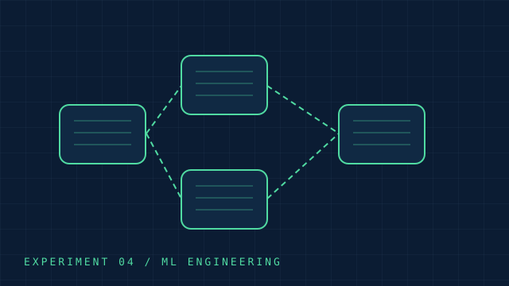
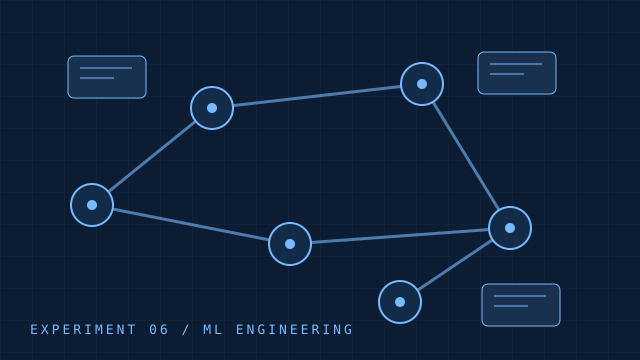
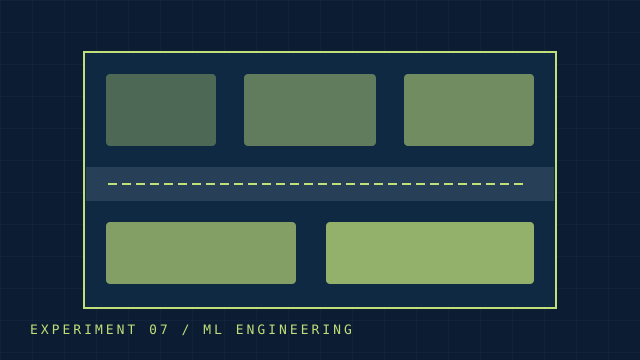
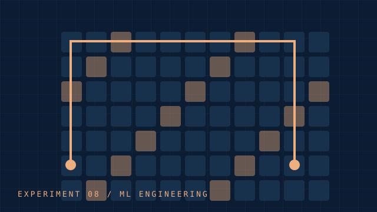
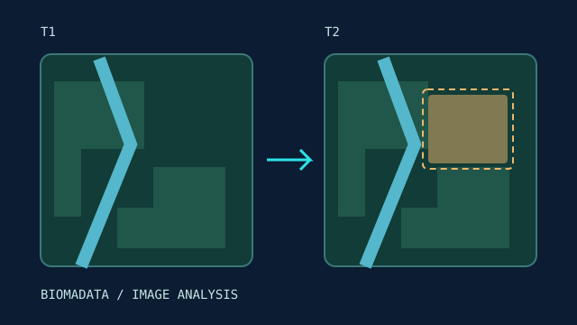
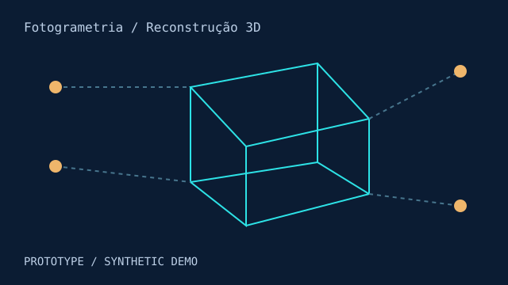
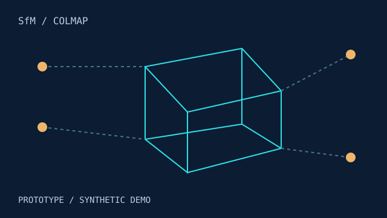
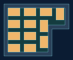
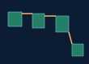

01
01
MVP de pesquisa
Saneamento inteligente
Planejamento de expansão de redes com orçamento limitado.
Contexto de inspiraçãoANA · Águas Brasil · BiomaData
Explore a coleção completa.
17 projetos
01
Planejamento de expansão de redes com orçamento limitado.
Contexto de inspiraçãoANA · Águas Brasil · BiomaData
 02
02
Classificação visual e avaliação sob perturbações adversariais.
Contexto de inspiraçãoGrupo CCR · Detran-DF
 03
03
Geração adversarial de layouts com validação geométrica.
Contexto de inspiraçãoMarcopolo

04Ingestão assíncrona, qualidade dos dados e processamento em lote.
Contexto de inspiraçãoMarcopolo · SPData · AWS
 05
05
Jogo abstrato entre agentes de ataque e defesa.
Contexto de inspiraçãoSenhaSegura · Protege

06Recuperação de documentos com evidências e relações entre ativos.
Contexto de inspiraçãoANA · BiomaData

07Alocação de turmas em salas com restrições de capacidade.
Contexto de inspiraçãoKeduka · Caeduca

08Caminho mínimo em grade com implementações Python e Rust.
Contexto de inspiraçãoSaneamento · Indústria

09Análise de imagens de diferentes datas para apoiar o monitoramento ambiental do Cerrado.
Contexto do projetoBiomaData · Cerrado
 10
10Aprendizagem de máquina para organizar editais e incorporar títulos revisados pelo usuário.

11Protótipo inicial
Reconstruir estruturas a partir de fotografias para apoiar inspeções e medições.

12Protótipo inicial
Organizar a reconstrução de áreas com erosão para estudar sua geometria.
 13
13Protótipo inicial
Comparar representações de uma instalação para visitas virtuais.
 14
14Protótipo inicial
Separar regiões da cena e comparar sua profundidade relativa.

15MVP geométrico
Recuos, implantação sem sobreposição e comparação de alternativas em um terreno sintético.
 16
16MVP espacial
Medir cobertura ambiental sem contar áreas sobrepostas mais de uma vez.

17MVP espacial
Explorar a proximidade entre fragmentos de vegetação e suas possíveis ligações.